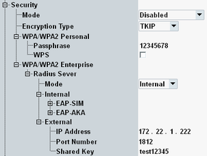
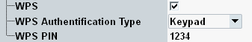
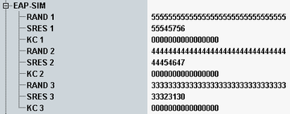
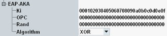

The "Security" node contains the settings for all security modes.
For background information, see "WLAN Security".

Selects the security mechanism to be used.
The WLAN signaling application supports Wi-Fi protected access (WPA and WPA2), with personal mode and enterprise mode. The enterprise mode requires option R&S CMW-KS660.
Depending on the selected operation mode, only a subset of the security modes is supported, see Table "Supported security mechanisms".
Remote command:Selects the encryption type to be used.
In the current release, encryption for WPA is limited to TKIP and encryption for WPA2 is limited to AES-based CCMP.
Remote command:This setting applies to WPA/WPA2 personal.
The used passphrase consists of 1 to 63 characters.
Remote command:This setting applies to WPA/WPA2 personal and is only displayed in operation mode AP. WPS is only supported on the SUU.
If WPS is enabled, a "WPS Authentication Type" can be selected. For the authentication types "Display" and "Keypad", the "WPS PIN" can also be configured.

For "Display", the signaling application expects that the DUT sends the specified WPS PIN. Specify any PIN and enter it at the DUT upon request.
For "Keypad", the signaling application sends the specified WPS PIN to the DUT. Specify the PIN that is expected by the DUT. To send the PIN to the DUT, you must press a hotkey, see "WDirect / WPS Start Conn. (hotkey)".
For background information, see "Wi-Fi Protected Setup (WPS)".
Remote command:The settings in this node are related to the RADIUS server for the WPA / WPA2 enterprise mode.
You can select between the internal RADIUS server and an external RADIUS server.
Remote command:This node configures EAP-SIM on the internal RADIUS server.

- RAND: The random challenge as 32-digit hexadecimal number.
- SRES: The signed response as 8-digit hexadecimal number.
- KC: The ciphering key as 16-digit hexadecimal number.
This node configures EAP-AKA on the internal RADIUS server.

- "Ki": The secret key is used for the authentication procedure (including a possible integrity check). The value is entered as 32-digit hexadecimal number.
- "OPc": The operator variant key is used for authentication and integrity check procedures with the MILENAGE algorithm set. The value is entered as 32-digit hexadecimal number.
- "Rand": The random number is used for the authentication procedure (including a possible integrity check). It is entered as 32-digit hexadecimal number.
- "Algorithm": The authentication algorithm to be used, which can be XOR or MILENAGE.
These settings configure the address of an external RADIUS server and the shared secret that the RADIUS server uses to obfuscate passwords.
Remote command: